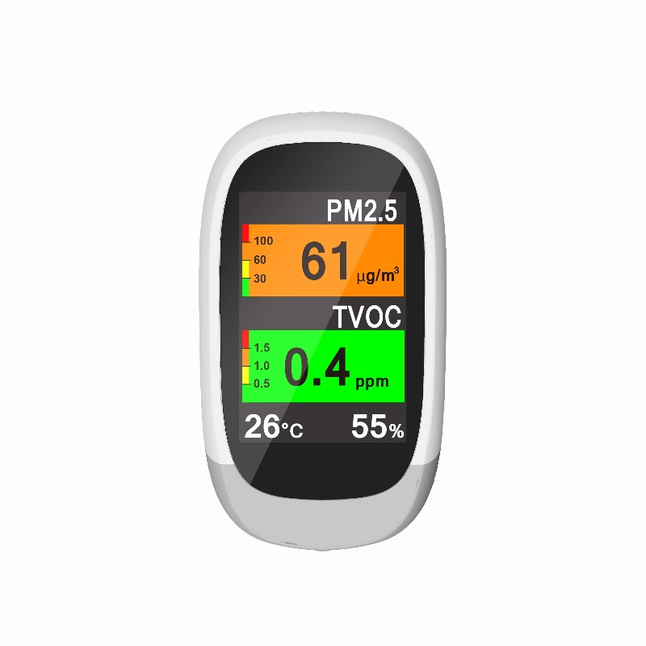

🌬
#1 Best Overall
New Portable Air Quality Detector Monitor
$109.40
Was $156.29 · 30% off
🏆 Best Overall

As our best overall pick, this New Portable Air Quality Detector Monitor delivers reliable performance at $109.40 with 30% off the original $156.29.
Key Specifications
Type
Multi-Gas Detector
Parameters
Multi-Gas
Sensor
Electrochemical
Display
LCD Color
Power
Rechargeable
Price
$109.40
Pros
- Comprehensive multi-gas detection
- Portable rechargeable design
- Color LCD display
- 30% off original price
Cons
- Highest price at $109.40
- Complex setup for all features